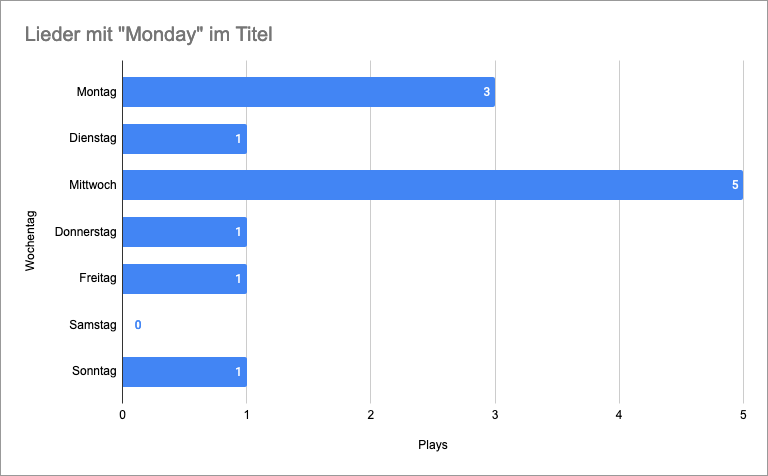
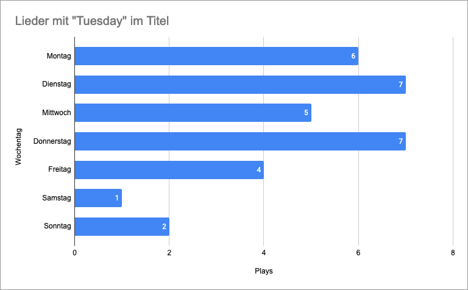
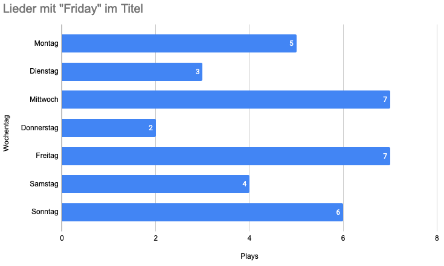
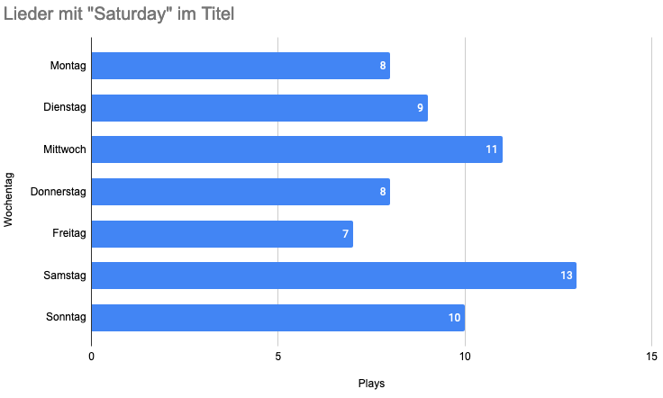
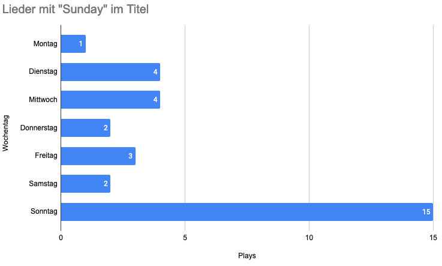

SRF3: Lieder mit Wochentagen im Titel
Station: SRF3
Werden Lieder mit Wochentage im Titel auch mehrheitlich an diesen Tagen gespielt?
Das Resultat zeigt: Nur “Saturday” und “Sunday” werden auch mehrheitlich an diesen Tagen gespielt.
Auch interessant, es gibt offenbar keine Lieder mit “Wednesday” oder “Thursday” im Titel.
Monday

Songs
- “Blue Monday" von New Order (10 plays)
- "Monday Morning” von Melanie Fiona (2 plays)
Tuesday

Songs
- “Breakdown Tuesdays” von Pedestrians (21 plays)
- "Tuesday" von Burak Yeter Feat. Danelle Sandoval (9 plays)
- "Tuesday" von Duckwrth (1 plays)
- “Rosé On A Tuesday" von Curtis Roach (1 plays)
Friday

Songs
- "Friday I’m In Love” von The Cure (14 Plays)
- “Last Friday Night” von Katy Perry (10 Plays)
- “Aloha Friday" von Cocorosie (3 Plays)
- "Friday" von Real Estate (3 Plays)
- "Friday 13th” von Gorillaz (2 Plays)
- "Friday I’m In Love" von Yo La Tengo (1 Plays)
- "Friday" von Yah Izrehl (1 Plays)
Saturday

Songs
- "Saturday" von Sam Fender (56 Plays)
- “Black Saturday" von Mando Diao (8 Plays)
- "Saturday Night Inside Out” von The Avalanches Feat. David Berman (1 Plays)
- "Saturday Night" von Whigfield (1 Plays)
Sunday

Songs
- “Sunday Bloody Sunday” von U2 (13 Plays)
- “Sunday” von Easy Life (6 Plays)
- “Sunday Best” von Surfaces (6 Plays)
- “Why Are Sundays So Depressing” von The Strokes (3 Plays)
- “Lazy Sunday” von Jar (2 Plays)
- “Forever Sunday” von BEACH SCVM (1 Plays)